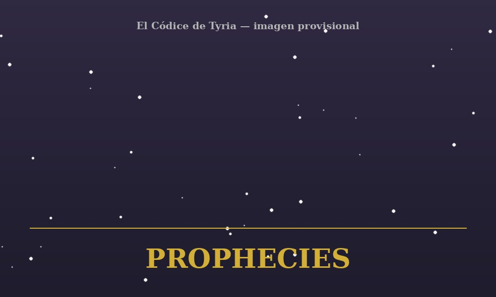
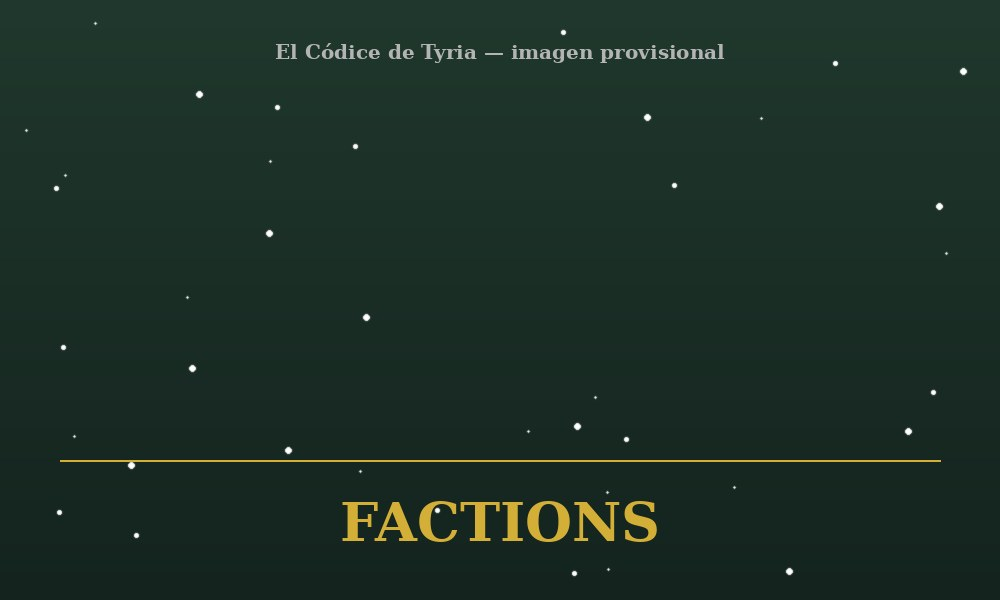
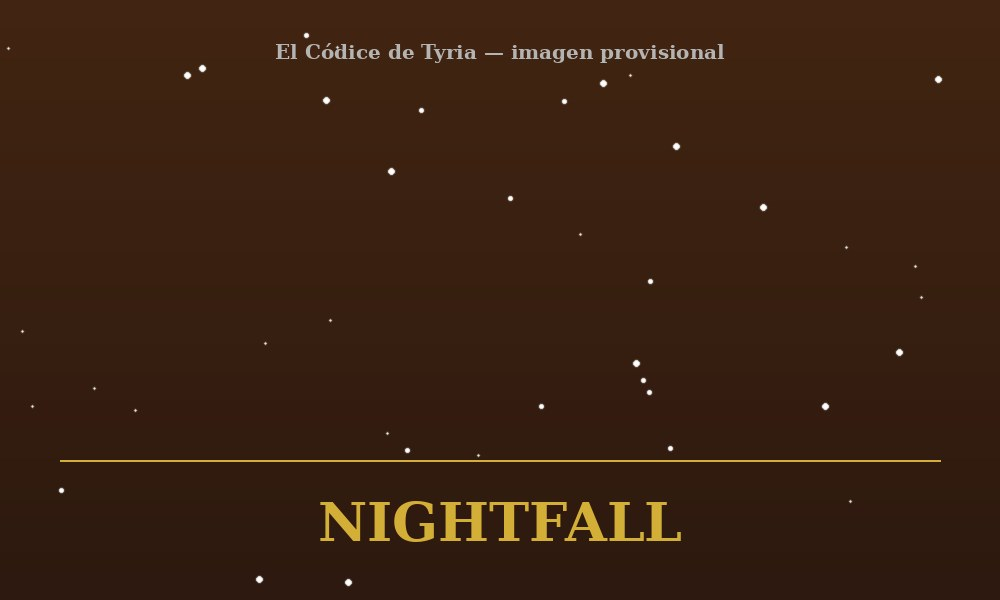
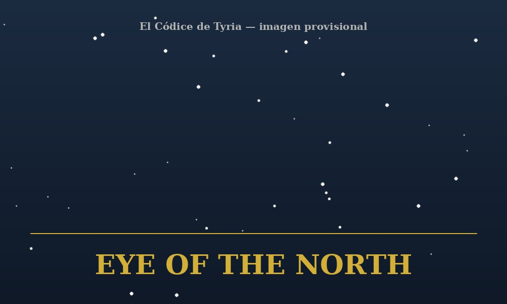

Guías, builds y secretos del mundo de Guild Wars

Los reinos humanos de Tyria se enfrentan a la amenaza de los charr. Como joven héroe, deberás defender Ascalon, descubrir los secretos de una antigua profecía y decidir el destino de la humanidad.

En el lejano continente de Cantha, una antigua traición dejó cicatrices que aún perduran. Mientras Kurzick y Luxon luchan por sobrevivir, una nueva amenaza amenaza con destruir un imperio que todavía intenta sanar sus heridas.

El reino de Elona se encuentra al borde de la destrucción bajo la sombra de un dios exiliado y una gobernante implacable. La tierra necesita algo más que un héroe: necesita un líder capaz de guiarla hacia la salvación.

Tyria necesita a sus héroes una vez más. Desde las profundidades de la tierra hasta las cumbres heladas del norte, una nueva amenaza emerge con un único objetivo: acabar con todo lo que conocemos.
Guías de todas las profesiones, habilidades y formas de jugar cada clase.
Todo lo necesario para completar logros y alcanzar la gloria.